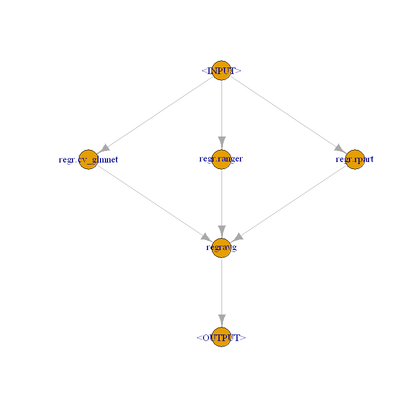

Examples# R: Case studies These are case studies with the R package DoubleML. R: Impact of 401(k) on Financial Wealth R: Cluster Robust Double Machine Learning Python: Case studies These are case studies with the Python package DoubleML. Python: Impact of 401(k) on Financial Wealth Python: Cluster Robust Double Machine Learning Sandbox These are examples which are work-in-progress and/or not yet fully documented.  R: Ensemble Learners and More with mlr3pipelines DML: Bonus Data